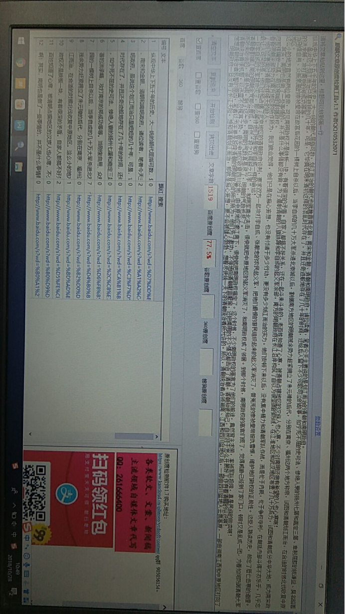

八旗铁骑入关后，南明成立了，为何不能和清朝划江而治
纵观中华上下五千年的历史，大一统的朝代屈指可数，划江而治的朝代也就魏晋南北朝、南宋和金朝、清朝和南明政府。诸位读者，笔者今天主要说的是划江而治的清朝和南明政府。
虽说这个划江而治只是短短的几十年，可是，它毕竟在明末清初这样的混乱时代存在了，并且还奇迹般地存在了几十年的时间，还给后人留下不少可歌可泣的故事，如宁死不屈的史可法、惨绝人寰的扬州七屠和嘉定三屠、卑躬屈膝的钱谦益、臭名昭著的洪承畴、攻打南京的郑成功等等。
当刚愎自用、众叛亲离的崇祯皇帝在故宫后花园的一棵树上自杀以后，当李自成的几十万大军杀进北京城以后，割据南方地区的明朝残余势力赶紧拥立了朱元璋的后代，分别在南京、福州这两个地方称帝，试图和清朝划江而治，在合适的时候北伐收复中原地区。
这么小的地方竟然有两位皇帝，可见南明政权不是铁板一块，有着很深的矛盾。自家人都搞不好关系，还在一起斗来斗去的。老百姓知道了心寒，被清朝占据地区的汉族人也心寒，不少对南明还抱有希望的人也心寒.
其实，南明也是做了一些事情的，并不是什么事情都没有做。为了遏制清朝的八旗铁蹄和李自成的起义军余部，南方的明朝政府在长江沿岸构筑了自以为很坚固的防线，在江淮地区和武汉地区布置了几十万兵力，试图和清朝瓜分中华大地，成为南宋政府那样偏安一隅、苟延残喘的割据政权。

看看明朝余部势力在南方地区的所作所为，我们就会觉得，他们只是在痴心妄想，也没有付诸于多少行动，更没有多少划江而治的实力。他们安顿下来以后，没有集中精力和清朝军队作战，而是忙于内耗，忙于争权夺利，在朝廷内部斗得不亦乐乎，几乎忘了他们还要面对清朝这样强大的敌人。
最让人可笑的是，他们还和占据了北京地区的清朝政府谈判，要求双方一起攻打李自成、张献忠的农民起义军，把他们最恨的游民组织起来的起义军消灭了，替冤死的崇祯皇帝报仇雪恨，维护他们政权的正规性。这些人熟读历史，却忘了唇亡齿寒的道理。一旦李自成的大军被攻灭了，那么等待他们将是和李自成一样的命运。
清朝看割据江南的明朝余党那么傻瓜，自然“投之以桃报之以李”，和明军南北夹击，很快就把中原地区的起义军消灭了，和南明政权成了邻居。到那个时候，南明政权的高官们慌了，觉得威胁已经到了家门口，顿时又是乱成一团，为着如何防御清朝大军而吵来吵去的，很是热闹。到了这一步，南明的气数真是尽了，明朝的气数也尽了。
清朝统治者很机警，以迅雷不及掩耳之势，由关中地区收复四川盆地，由中原地区渡江南下，很快就把南明政权搞定了。这个时候，不少南明政权的高官为了他们的前途，竟然背主求荣，率领军队投降，真是民族的败类。
想想清朝统治者机警的原因，笔者以为主要是投降清朝的明朝官员的所作所为。他们为了邀功，不停地向清朝献言献策，还把南明的不少情况都告诉了清朝。清朝知彼知己，自然对于怎么开展好工作有着清醒的认识。
明朝政府一旦没有了长江天险，想和清朝划江而治，那就是痴心妄想，更不会被雄心勃勃、想着尽快统一天下的清朝统治者所允许的。所以，清朝统治者占领湖南、江西和四川盆地以后，一部由四川盆地入云贵高原，一部由湖南江西和中原地区打向了东南沿海地区，开始了他统一天下的最后一战！
到了这个时候，割据江淮地区和东南沿海地区的明朝政府要么拼命抵抗，在一些地方进行着殊死的搏斗，用鲜血书写着可歌可泣的赞歌，要么不停地流亡到东南亚地区，在那里积蓄力量，要么就地投降，成为满清的走狗，根本没有能力、机会再和清朝统治者斗下去。
小编看法，清朝统治者断了南明政权划江而治的梦想，再次成了大一统的国家
到了长江边沿，清朝统一天下其实就已经成了大势所趋，再也不是南明那些宵小之辈所能够拦得住的！读者们，如果你们生活在那个年代，你会怎么做呢？
